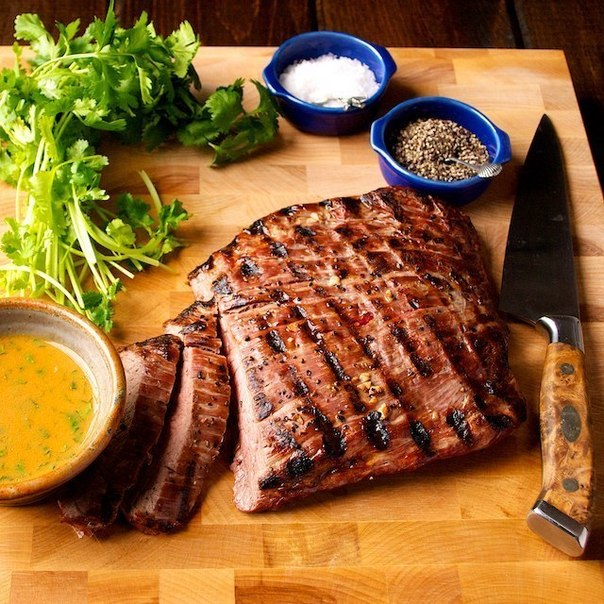

Для тех, кто любит мясо! Мясные блюда всегда занимают достойное место на нашем столе. Прежде чем начать готовить, мясо маринуют для того, чтобы, во-первых,подчеркнуть вкус продукта, а во-вторых, получить более сочное и нежное блюдо.
“Маринад” произошло от латинского mare – море,первым маринадом служила морская вода.
Маринады различают сырые и прогретые, а также сухие и жидкие.
Мясо классифицируют по разным признакам: по виду животного (говядина,баранина,свинина ),по полу,по возрасту,упитанности,термическому состоянию (парным, охлажденным,замороженным)
С шашлыками лучше всего работает такое правило: выслушай всех и сделай по-своему!
ПРОСТЫЕ ПРАВИЛА
- Солить и перчить мясо рекомендуется непосредственно перед жаркой или незадолго до готовности. Соль в маринаде вытянет из мяса всю влагу,а перец при сгорании теряет аромат и придает мясу горечь.Соль лучше использовать крупного помола.
- Уксус содержит больше кислоты, чем вино, фруктовые соки, поэтому продукты размягчаются в нем быстрей. Лучше всего использовать винный уксус.
- Вино для маринования мяса используют сухое столовое,красное или белое.
- Натуральный йогурт и кефир содержат молочную кислоту, которая размягчает продукты и жиры.
- Растительное масло –это ”проводник” для специй и кислот, котрый не дает мясу свариться.Во время жаренья масло образует на поверхности продукта защитную пленку, благодаря чему из него не вытекает сок.
-Красный перец сушит мясо, его лучше не использовать.
-Время маринования мяса зависит от качества изначального продукта. В одних случаях достаточно пары часов, в других — шесть, в третьих — ночь или даже пару дней.
-В качестве основы для маринада часто используют пиво или сильно газированную воду. Все дело в пузырьках: выделяясь из воды, они раздвигают волокна и делают мясо еще мягче и сочнее.
-При мариновании мяса для шашлыка в вине НЕ используйте специй, кроме соли и черного перца. Используйте сухие красные вина, богатые кислотой и пряными ароматами. Мариновать час-три.
-Добавляйте специи только в том случае, если вы действительно в них разбираетесь и знаете чего хотите. Никогда НЕ используйте сурогатные смеси “для шашлыка”, “для мяса” и тому подобное.
- Прянности. Перец-черный, белый, зеленый, розовый, душистый. Гвоздику, корицу, бадьян, имбирь, кардамон, лавровый лист, куркуму, и пр.
-С бараниной прекрасно сочетаются чабрец, майоран, орегано , чабер, розмарин, укроп.
- Мариновать мясо лучше всего в эмалированной, глиняной или стеклянной посуде.
Маринады (на 1 кг мяса)
По-русски: В 200 г кваса добавь 2 ст. ложки меда и 1 мелко нарезанную головку лука. Выдержи в этой смеси любое мясо в течение 4-6 часов.
По-баварски: Соедини 3 ст. ложки сухой горчицы, 2 ст. ложки 3%-ного уксуса, 250 г растительного масла и 4 зубчика измельченного чеснока. Всыпь в смесь 1 ч. ложку майорана, 1 ч. ложку молотого перца и 1 ст. ложку мелко нарезанного свежего базилика. Этот маринад больше всего подходит для свинины и баранины.
Шашлык кавказский: Филе баранины (рекомендуется брать корейку), соль, черный перец, лук репчатый, чеснок, лимон.Мясо выкладываем в кастрюлю, солим, перчим, перемешиваем с тертым луком и измельченным чесноком, поливаем лимонным соком. Ставим в холодильник на 6-8 часов.
Маринад с молочными продуктами: 500 мл кефира, 500 мл минеральной воды с газом, немного соли, свежемолотый черный перец, сухие травы по вкусу, 1 кг любого мяса для жарки.Смешать кефир, воду и специи. Поместить в маринад мясо на 2-4 часа. Потом вытащить, осушить салфеткой и жарить. Можно на гриле, можно на сковороде, можно на шампурах.
Маринад с вином и минеральной водой: 500 мл сухого белого вина типа «Ркацетели», 500 мл. минеральной воды с газом, немного соли, свежемолотый черный перец, сухие травы по вкусу, 3-4 луковицы, 1 кг любого мяса. Смешать вино, воду и пряности. Поместить в маринад мясо на 3-5 часов.
Маринад из горчицы и пива: Горчица обыкновенная, 250 гр., пиво темное 250 мл, свежемолотый черный перец, мясо – 1.5 кг. Мясо нарезать порционными кусками. Обмазать горчицей щедро. Посыпать перцем. Оставить на 1 час. Залить мясо пивом и оставить на 2 -3 часа. Жарить, обваляв в муке и сбрызгивая соленой водой.
Маринад простой: 250—300 г лука, 1 чайная ложка крупной соли, 1 столовая ложка кумина (зиры). Лук нарезать тонкими кольцами, посолить и размять руками, чтобы лук начал выделять сок. Мясо посыпать кумином и добавить в луковую смесь, хорошенько перемешать. Мариновать 3—4 часа. Нанизать мясо на шампуры и поперчить, сделав над шашлыком несколько оборотов мельницей.
Свинина в белом вине: Вырезка, лук репчатый, соль, перец, вино белое сухое (чем дешевле, тем лучше).Кладем все продукты в кастрюлю, тщательно перемешиваем руками, заливаем вином (половина стакана на 1 килограмм мяса). Ставим под грузом в холодильник на 4 часа.
Маринад томатный: 3 мягких помидора, соевый соус, 1 чайная ложка паприки, 1 столовая ложка меда, 1 столовая ложка кунжутного или оливкового масла. Томаты натереть на терке и процедить через сито или марлю. Получившийся сок дополнить таким же количеством соевого соуса, добавить мед, масло, присыпать паприкой. Свинину мариновать около 2 часов, говядину — от 4 до 6.